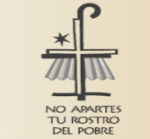

Acá podés encontrar tu templo más cercano o favorito
Tenés control total sobre templos, horarios y actividades parroquiales.
Primera lectura, Salmo y evangelio del día.
Versión CEA
Acá es para que cuentes un poco de vos
Ingresá tu clave de Administrador (control total) o de Colaborador de Comunidad (actividades y grupos parroquiales).
Clave incorrecta. Verificá el código e intentá de nuevo.
Día: HH:MM, HH:MM
Modificá o sumá grupos, pastorales y actividades sin alterar los datos principales del templo.